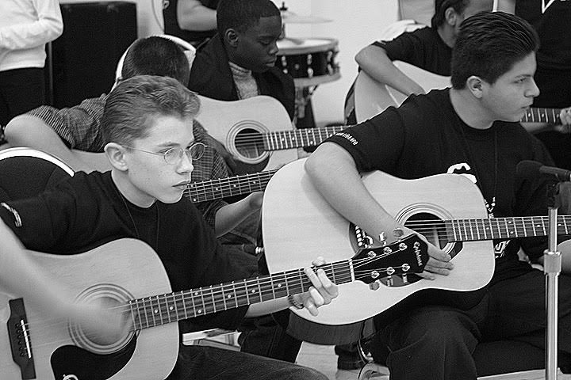
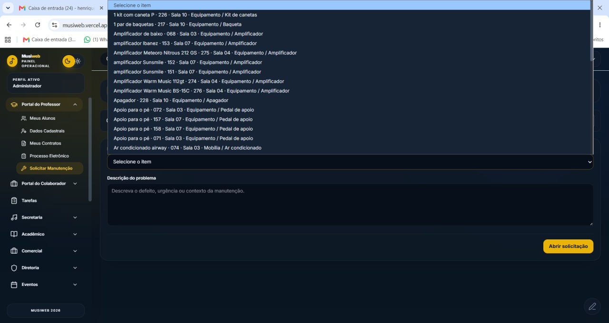
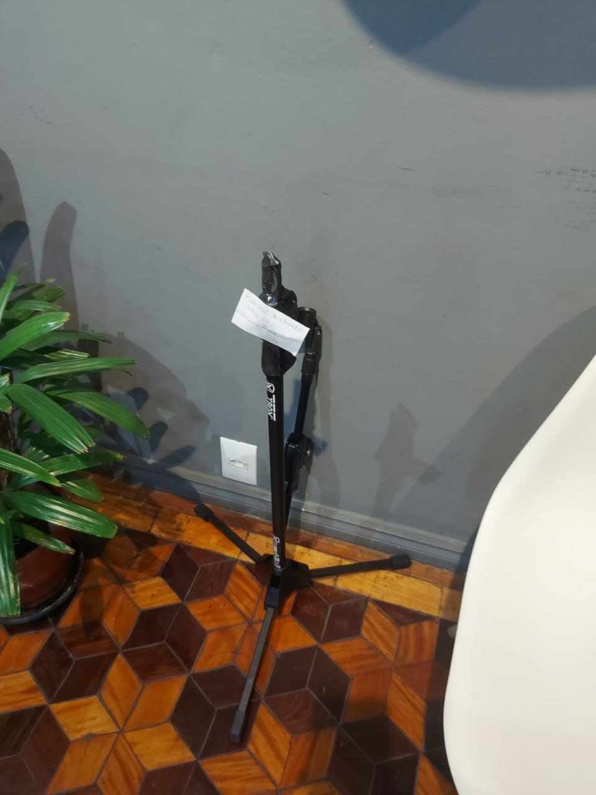

Remuneração
Novos valores para Flex/Triflex e Vip.
Reunião com professores
Alinhamento dos novos valores, atualização dos contratos, uso das ferramentas e cuidado com a estrutura da escola.

1. Objetivo da reunião
A ideia é apresentar as atualizações de remuneração, contrato de serviço, manual de conduta e alguns pontos importantes da rotina da escola.
Novos valores para Flex/Triflex e Vip.
Atualização do contrato de serviço e manual de conduta.
Ferramentas, agenda, materiais, salas e organização.
2. Reajuste de remuneração
A partir da atualização, os valores passam a ser organizados por modalidade de atendimento.
Novo valor de remuneração para aulas dos planos Flex e Triflex.
Novo valor de remuneração para aulas Vip.
3. Reajuste anual
Para dar previsibilidade, os reajustes de remuneração dos professores serão revisados anualmente.
4. Contrato e manual de conduta
Além dos novos valores, o contrato de serviço e o manual de conduta serão atualizados para deixar as regras mais claras para todos.
5. Reuniões por instrumento
A ideia é que as próximas reuniões aconteçam por áreas ou instrumentos, para que os assuntos fiquem mais próximos da realidade de cada professor.
6. Musiweb para professores
Em breve, o Musiweb estará disponível para os professores com informações importantes da escola de maneira simples e acessível.
Número de alunos, novas matrículas, cancelamentos, desistências e aulas experimentais.
Pedido de manutenção, solicitação de materiais, contrato de serviço e manual de conduta.
7. Visual do Musiweb
A ferramenta também vai ajudar a registrar solicitações de manutenção e materiais de forma organizada.

Exemplo de tela do Musiweb para solicitação de manutenção.
8. Emusys
O Emusys segue sendo a ferramenta de referência para acompanhamento da rotina operacional dos professores.
9. Cuidado com materiais e salas
Precisamos reforçar o cuidado coletivo com materiais, equipamentos e salas de aula. Isso impacta diretamente a qualidade das aulas e a imagem da escola.
Pedestais, microfones, cabos, instrumentos e acessórios precisam ser usados e guardados com cuidado.
Evitar deixar luzes e equipamentos ligados após o uso das salas.
Manter salas limpas, organizadas e prontas para o próximo professor e aluno.
10. Exemplos recentes
Algumas situações recentes mostram a importância de termos mais atenção com o uso e a organização dos materiais.

Pedestal quebrado após pouco tempo de uso.

Equipamentos deixados ligados.
Fechamento
A ideia é que todos saiam daqui com clareza sobre os novos valores, os combinados de contrato, o uso das ferramentas e o cuidado com a estrutura da escola.
Quanto mais organizada for a nossa rotina, melhor fica o trabalho para professores, alunos e escola.